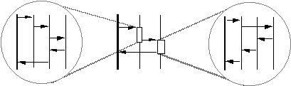

|
Создание реализаций вариантов использования
|
Объект Рабочий продукт: Реализация варианта использования проектирования
предоставляет способ трассировки поведения модели проектирования обратно к модели вариантов использования. Кроме того,
он применяется для организации коопераций в модели проектирования в соответствии с понятием варианта использования.
Создайте реализацию варианта использования проектирования в модели проектирования для каждого варианта использования.
Имя реализации варианта использования проектирования должно совпадать с именем связанного варианта использования. Кроме
того, между реализацией варианта использования и вариантом использования следует создать взаимосвязь реализации.
|
Опишите взаимодействия между объектами проектирования
|
Для каждой реализации варианта использования следует показать взаимодействия между участвующими объектами
проектирования путем создания одной или нескольких диаграмм последовательности. Ранние версии можно создавать на этапе
Задача: Анализ вариантов использования. Такие версии анализа
реализаций вариантов использования описывают взаимодействия между классами
анализа. Их следует преобразовать для описания взаимодействий между элементами проектирования.
Процедура обновления диаграмм последовательности состоит из следующих этапов:
-
Определите каждый объект, принимающий участие в потоке варианта использования. Для этого следует создать экземпляры
классов проектирования и подсистем, описанных в разделе Задача: Определение элементов проектирования. В динамических
системах необходимо определить экземпляры капсул, принимающих участие в потоке варианта использования.
-
Представьте каждый активный объект диаграммы последовательности. Создайте генеральную линию для каждого объекта
диаграммы последовательности. Подсистемы проектирования можно представить следующими способами:
-
На диаграмме последовательности можно показать экземпляры подсистемы.
-
Можно использовать интерфейсы, реализованные подсистемой. Такой подход эффективен, если требуется показать,
что место интерфейса может занимать любой элемент модели, реализующий такой же интерфейс. Обратите
внимание, что интерфейсы не должны отправлять сообщения другим объектам диаграммы последовательности. Это
связано с тем, что интерфейсы полностью инкапсулируют внутреннюю реализацию своих операций. Поэтому нельзя
гарантировать, что все элементы, реализующие интерфейс, будут спроектированы одинаковым образом. Таким
образом, на диаграммах последовательности запрещены сообщения, отправляемые из интерфейсов.
-
На диаграммах последовательности подсистему можно представить с помощью компонента. Компоненты
рекомендуется применять для описания подсистем, поддерживающих обмен сообщениями. Таким образом можно
показать сообщения, отправляемые из компонента другим объектам.
Обратите внимание, что рассматриваются диаграммы последовательности уровня системы, которые отражают
взаимодействие экземпляров элементов проектирования верхнего уровня (подсистемы и интерфейсов подсистем).
Диаграммы последовательности, на которых показана внутренняя структура подсистем, создаются отдельно в ходе
процедуры, рассмотренной в разделе Задача:
Проектирование подсистемы.
-
Обратите внимание, что взаимодействия активных объектов, как правило, описываются с помощью коопераций
спецификации и конечных автоматов. Они применяются для отображения способа отправки сообщений активным объектам
из других элементов системы в рамках более масштабной реализации варианта использования. Типичный подход
заключается в инкапсуляции активных объектов в подсистемах таким образом, чтобы реализация варианта
использования состояла из набора взаимодействующих подсистем. Взаимодействия задают обязанности и интерфейсы
подсистем. В пределах подсистемы активные объекты представляют параллельные нити выполнения. Подсистемы
позволяют разделить работу между группами разработки; интерфейсы в этом случае выполняют роль формальных
контрактов между группами разработки. В динамических системах для представления активных объектов применяются
объекты Рабочий продукт: Капсула.
Дополнительное примечание, относящееся к обмену сообщениями между подсистемами: Передача сообщений
преимущественно с помощью интерфейсов позволяет уменьшить зависимость элементов модели друг от друга и повышает
устойчивость проектирования. По возможности рекомендуется стремиться к достижению этой цели; сообщения,
передаваемые между подсистемами и элементами модели, не имеющими отношения к интерфейсам, следует заменять
сообщениями для интерфейсов, тем самым повышая устойчивость модели.
-
Представьте взаимодействие с субъектами. Представьте все экземпляры субъекта и внешние объекты, принимающие участие
во взаимодействии, генеральными линиями на диаграмме последовательности.
-
Покажите сообщение, передаваемое между взаимодействующими объектами. Поток событий начинается в верхней части
диаграммы и продолжается вниз (вертикальная ось времени). Покажите сообщения, передаваемые между объектами, добавив
сообщения (стрелки) между генеральными линиями. Имя сообщения должно совпадать с именем вызываемой этим сообщением
операции. На ранних этапах проектирования с объектами связано незначительное число операций; в этом случае для
сообщения можно указать временное имя; такие сообщения называются "невыделенными". Впоследствии, уточнив операции
объектов, диаграмма последовательности обновляется путем связывания сообщений с операциями.
-
Опишите действия объекта при получении сообщения. Для этого в сообщение добавляется сценарий. Сценарии, состоящие
из структурного текста или псевдокода, размещаются на полях диаграммы. Конструкции псевдокода должны
соответствовать языку реализации для облегчения реализации соответствующих операций. На основе сценариев объектов
сотрудник, отвечающий за класс объекта, присваивает и разрабатывает операции.

Поведение варианта использования, реализуемое объектами, описывается на диаграмме последовательности.
После распределения поведения между объектами необходимо определить способ управления потоком событий. Объекты
выбирались по следующим критериям: они должны взаимодействовать конкретным образом в реализации варианта использования
и должны выполнять конкретную роль. По мере распределения поведения можно начать проверку этих предположений. На этапах
потока допустима как централизованная, так и децентрализованная структура. Определения этих вариантов и рекомендаций по
их применению приведены в разделе Методика: Диаграммы последовательности.
На данном этапе могут потребоваться новые объекты, например, если применяется централизованная структура и необходим
объект для управления потоком. Не забудьте, что все объекты, добавляемые в модель проектирования, должны
соответствовать требованиям модели объекта.
В разделе Задача: Архитектурный анализ были рассмотрены механизмы анализа. В
разделе Задача: Определение механизмов проектирования на основе механизмов
анализа создаются механизмы проектирования; процедура перехода от механизмов анализа к механизмам проектирования
рассмотрена в разделе Документ об архитектуре программного обеспечения, механизмы
проектирования описаны в рекомендациях по проекту.
В ходе выполнения этой задачи все применимые механизмы проектирования внедряются в реализации вариантов использования.
Проектировщик выбирает механизмы проектирования, применимые к разрабатываемой реализации варианта использования в
соответствии с рекомендациями, описанными в документе об архитектуре программного обеспечения и рекомендациях по
проектированию.
Примечание: Применимые механизмы проектирования могли рассматриваться на этапе Задача: Анализ вариантов использования, в ходе которой классы анализа
могли быть связаны с конкретным механизмом анализа - в ходе проектирования должна обрабатываться конкретная
функциональность. В таком случае применимые механизмы проектирования выбираются из числа механизмов, связанных с
механизмами анализа классов анализа, принимающих участие в реализации варианта использования.
Проектировщик внедряет применимые механизмы проектирования в реализации вариантов использования путем добавления
необходимых элементов проектирования и их взаимодействий в реализации вариантов использования в соответствии с
правилами, описанными в рекомендациях по проектированию.
Каждый вариант потока событий следует описать на отдельной диаграмме последовательности. Преимущество диаграмм
последовательности по сравнению с диаграммами связи обусловлено уровнем подробности, который требуется при
проектировании системы.
Начните с описания основного потока, который состоит из наиболее общих или важных событий. Затем опишите такие
варианты, как исключительные потоки. На предварительном этапе представления операций взаимодействующих объектов не
требуется описывать все потоки событий. Таким образом, можно пропустить наиболее простые потоки, например,
затрагивающие только один объект.
Изучите вариант использования и попытайтесь найти варианты потока, которые не были описаны в ходе разработки требований
и анализа, например, потоки, зависящие от реализации. Опишите каждый обнаруженный поток на диаграмме
последовательности. Ниже приведены примеры исключительных потоков.
-
Обработка ошибок. Вариант использования должен обрабатывать ошибки интерфейсов, например, неполадки при
подключении к удаленной системе. Возможное решение: открыть новый маршрут связи.
-
Обработка тайм-аутов. Если пользователь не отвечает в течение заданного периода, вариант использования
должен принять специальные меры.
-
Обработка ошибок входных данных объектов варианта использования. Такие ошибки могут возникнуть в ходе
взаимодействия с пользователем.
Вместо варианта альтернативный поток можно описать как необязательный поток. В следующем списке приведены примеры
необязательных потоков.
-
Отправляя сигнал, субъект выбирает один из вариантов использования. Вариант использования предложил субъекту
ответить на вопрос или предоставил доступ к набору функций, которые система может выполнить в текущем состоянии.
-
Путь потока зависит от значения атрибута или взаимосвязи. Последующий поток событий зависит от типа обрабатываемых
данных.
Для привлечения внимания к необязательному потоку или сложному дочернему потоку рекомендуется использовать отдельную
диаграмму последовательности. На диаграмме последовательности основного потока событий должны быть указаны ссылки на
все отдельные диаграммы последовательности с помощью сценариев, текста и примечаний на полях с описанием
соответствующего поведения.
Если поведение необязательного или исключительного потока не зависит от конкретного расположения, например, поведение,
вызываемое конкретным событием, на диаграмму последовательности основного потока событий следует добавить комментарий о
том, что в результате возникновения события запускается поведение, описанное на необязательной/исключительной диаграмме
последовательности. Кроме того, в случае важного поведения, управляемого событиями, для описания поведения системы
можно использовать диаграммы состояний. Дополнительная информация приведена в разделе Рекомендация: Диаграмма состояний.
|
Упрощение диаграмм последовательности с помощью подсистем (необязательно)
|
В процессе реализации варианта использования поток событий, как правило, описывается с учетом выполняемых объектов,
т.е. в качестве взаимодействия между объектами проектирования. Для упрощения диаграмм и определения поведения,
допускающего повторное использование, может потребоваться инкапсулировать дочерний поток событий в рамках подсистемы.
Такой подход позволяет заменить большие разделы диаграммы последовательности на отдельное сообщение, передаваемое
подсистеме. Для иллюстрации внутренних взаимодействий подсистемы, реализующих требуемое поведение, можно использовать
отдельную диаграмму последовательности (дополнительная информация приведена в разделе Задача: Проектирование подсистемы).
Подмножества последовательности сообщений на диаграммах последовательности следует заменять подсистемами в следующих
случаях:
-
Подмножество последовательности повторяется в различных реализациях варианта использования; т.е. совпадающие (или
аналогичные) сообщения отправляются совпадающим (или аналогичным) объектам с одним и тем же результатом. Применение
термина 'аналогичные' обусловлено тем, что для повторного применения поведения может потребоваться дополнительное
проектирование.
-
Подмножество последовательности встречается только в одной реализации варианта использования, однако его повторение
ожидается в последующих итерациях или аналогичных системах. Поведение может оказаться хорошим многоразовым
компонентом.
-
Сложное подмножество последовательности встречается только в одной реализации варианта использования, однако его
можно легко инкапсулировать, оно является предметом ответственности одного сотрудника или группы и позволяет
получить конкретный результат. В таких ситуациях сложное поведение, как правило, требует специальных технических
знаний, либо простой инкапсуляции в рамках подсистемы.
-
Подмножество последовательности подлежит инкапсуляции в заменяемом компоненте (см. раздел Концепция: Компонент). В этом случае подсистема является подходящим
представлением компонента в модели проектирования.

При необходимости реализацию варианта использования можно описать на нескольких уровнях иерархической структуры
подсистемы. Генеральные линии на средней диаграмме представляют подсистемы; обведенные взаимодействия - это внутренние
взаимодействия элементов подсистемы в ответ на получение сообщения.
Данных подход обладает следующими преимуществами:
-
Реализации вариантов использования становятся менее запутанными (в особенности, для подсистем со сложной внутренней
структурой).
-
Реализации вариантов использования можно создать перед внутренним проектированием подсистем; например, такая
возможность полезна в параллельных средах разработки (см. раздел "Параллельная работа").
-
Реализации вариантов использования становятся более общими и легко изменяемым (в особенности если подсистемы
требуется заменить на другие подсистемы).
Пример:
Обратитесь к следующей диаграмме последовательности, которая принадлежит реализации варианта использования местного
звонка:
На этой диаграмме серые классы принадлежат подсистеме Операции сети; остальные классы - подсистеме Операции абонента. В
данном случае приведена диаграмма последовательности с несколькими подсистемами, т.е. диаграмма, на которой
представлены все объекты, принимающие участие в потоке событий, независимо от принадлежности их классов.
В качестве альтернативы можно привести поведение вызова в подсистеме Операции сети и рассмотреть работу конкретного
интерфейса этой подсистемы. Предположим, что подсистема Операции сети предоставляет интерфейс ICoordinator, применяемый
подсистемой Операции абонента:
Интерфейс ICoordinator реализован классом Coordinator подсистемы Операции сети. Таким образом, подсистему Операции сети
и ее интерфейс ICoordinator можно использовать на диаграмме последовательности вместо экземпляров классов подсистемы
Операции сети.
Обратите внимание, что экземпляры классов Coordinator, Digit Information, и Network заменены содержащей их подсистемой.
Все вызовы подсистемы выполняются с помощью интерфейса ICoordinator.
Отображение интерфейсов в генеральных линиях
Для обеспечения возможности замены подсистем, реализующих один и тот же интерфейс, во взаимодействиях (а в общем случае
и на диаграммах) должны быть видимы только взаимодействия; в противном случае после замены подсистем потребуется внести
дополнительные изменения во взаимодействия (или диаграммы).
Пример:
Для добавления доступен только интерфейс ICoordinator, однако он не представляет подсистему на диаграмме
последовательности:
Отправка сообщения генеральной линии интерфейса означает, что вместо реализующей этот интерфейс подсистемы на диаграмме
можно указать интерфейс. Обратите внимание, что генеральная линия интерфейса ICoordinator не содержит исходящих
сообщений, поскольку различные подсистемы, реализующие этот интерфейс, могут отправлять разные сообщения. Однако
сообщения, отправляемые из реализующей интерфейс подсистемы, при необходимости можно описать как исходящие сообщения
генеральной линии интерфейса.
В некоторых случаях оптимальным выбором является независимая разработка подсистем параллельно с разработкой других
подсистем. Для этого в первую очередь необходимо найти зависимости подсистем, определив интерфейсы между ними.
Соответствующая процедура может выглядеть следующим образом:
-
Рассмотрите требования, влияющие на интерфейсы между подсистемами.
-
Создайте схематическое представление требуемых интерфейсов с указанием сообщений, пересекающих границы подсистем.
-
Нарисуйте диаграммы последовательности с учетом подсистем для каждого варианта использования.
-
Уточните интерфейсы, необходимые для передачи сообщений.
-
Приступите к параллельной разработке подсистем, используя интерфейсы в качестве инструментов синхронизации между
группами разработки.
Кроме того, на диаграммах последовательности можно использовать подсистемы или только интерфейсы подсистем. В некоторых
проектах может потребоваться реализовать классы, предоставляющие интерфейсы, перед продолжением моделирования.
|
Описания поведения, связанного с постоянным хранением
|
Основная цель объектно-ориентированного подхода заключается в инкапсуляции подробностей реализации. Таким
образом, по отношению к постоянному хранению рассматриваемые постоянные объекты должны выглядеть аналогично
временным объектам. Мы не должны учитывать необходимость постоянного хранения объектов. Кроме того, они должны
обрабатываться также как и остальные объекты. По крайней мере такова наша цель.
Фактически же в некоторых случаях приложение должно контролировать различные аспекты постоянного хранения:
-
время чтения и записи постоянных объектов
-
время удаления постоянных объектов
-
способ управления транзакциями
-
способ управления блокировкой и параллелизмом
Следует рассмотреть два случая: первая операция записи постоянного объекта в хранилище постоянных объектов и
последующие операции записи, выполняемые приложением для обновления хранилища постоянных объектов внесенными
изменениями.
В обоих случаях конкретные механизмы зависят от операций, поддерживаемых средой постоянного хранения. Как правило,
постоянный объект создается путем отправки соответствующего сообщения в среду постоянного хранения. После этого среда
постоянного хранения отслеживает все изменения, вносимые в постоянный объект, и записывает их в хранилище постоянных
объектов (как правило, в ходе фиксации транзакции).
Пример создания постоянного объекта приведен ниже:
Объект PersistenceMgr - это экземпляр среды постоянного хранения VBOS. OrderCoordinator создает заказ путем отправки
сообщения 'createPersistentObject' объекту PersistenceMgr.
В основном данное поведение не требуется моделировать явным образом. Исключение составляет тот случай, когда
требуется явным образом указать, что объект сохраняется на конкретном этапе последовательности событий. Если
последующие операции обращаются к объекту, он должен существовать в базе данных; в этом случае важно знать, что объект
существует в ней.
Приложение может отправить сообщение постоянному объекту только после того, как он будет извлечен из хранилища
постоянных объектов. В объектно-ориентированной системе для этой цели объектам отправляются сообщения. Однако если
целевой объект еще не загружен в память из базы данных, возникает неполадка: сообщение нельзя отправить несуществующему
получателю!
Таким образом, требуется отправить сообщение объекту, отвечающему за обращение к базе данных, а также извлечение и
создание экземпляра нужного объекта. Только в этом случае сообщение можно отправить в исходном виде. Объект, который
создает экземпляр постоянного объекта, называется объектом фабрики. Объект фабрики отвечает за создание
экземпляров объектов, в том числе постоянных объектов. Если запрос известен, то фабрика может возвращать набор
объектов, соответствующих критериям запроса.
Как правило, объекты связываются друг с другом с помощью ассоциаций. По этой причине достаточно извлечь только
корневой объект; остальные объекты извлекаются из базы данных в соответствии с ассоциациями с корневым объектом.
(Для эффективного механизма постоянного хранения характерна следующая особенность: он извлекает объекты только по мере
необходимости; в противном случае может быть создано большое число ненужных экземпляров объектов. Преждевременное
извлечение объектов - это одна из основных проблем производительности простых механизмов управления постоянными
объектами.)
Следующий пример показывает, каким образом можно смоделировать извлечение объектов из хранилища постоянных объектов. На
реальной диаграмме последовательности объект DBMS не будет показан, поскольку он будет входить в состав объекта
фабрики.
Как это ни парадоксально, но основная проблема постоянных объектов - их постоянное хранение! В отличие от временных
объектов, которые исчезают по завершении родительского процесса, постоянные объекты существуют до тех пор, пока не
будут удалены явным образом. Таким образом, важное значение имеет удаление ненужных объектов.
Трудности связаны с определением необходимости удаления. Завершение обработки одним приложением не означает, что объект
не нужен другим приложениям. Кроме того, поскольку объекты могут содержать неизвестные ассоциации, в некоторых случаях
достаточно сложно определить, можно ли удалить объект.
В процессе проектирования такую ситуацию можно представить с помощью диаграмм состояний: при достижении объектом
конечного состояния его можно разблокировать. Разработчики, отвечающие за реализацию постоянных классов,
в соответствии с диаграммами состояний могут вызвать подходящее поведение для разблокировки объекта. Проектировщик
реализации варианта использования отвечает за вызов операций, переводящих объект в конечное состояние,
непосредственно перед удалением объекта.
Если объект связан с большим числом других объектов, возможность его удаления может быть сложно определить. Поскольку
объекту фабрики известна структура удаляемого объекта и связанных с ним объектов, в большинстве случаев в
объекте фабрики можно предусмотреть класс, отвечающий за проверку возможности удаления конкретного экземпляра. Кроме
того, поддержку такой функции может предоставлять среда постоянных объектов.
Транзакции описывают набор вызовов атомарных операций; выполняются все операции, либо ни одна из них. В
контексте постоянных объектов транзакция описывает набор изменений, вносимых в набор объектов; выполняются все
изменения, либо ни одно из них. Транзакции обеспечивают согласованность, т.е. наборы объектов переходят из одного
согласованного состояния в другое.
В реализациях вариантов использования транзакции могут быть представлены несколькими способами:
-
В текстовом виде. С помощью сценариев на полях диаграммы последовательности; границы транзакций могут быть
описаны, как это показано ниже. Это простой способ, позволяющий использовать для реализации транзакции произвольное
число механизмов.
Представление границ транзакций с помощью текстовых аннотаций.
-
С помощью явных сообщений. Если механизм управления транзакциями предусматривает применение явных сообщений
для запуска и завершения транзакций, то эти сообщения можно представить на диаграмме последовательности, как это
показано ниже:
Диаграмма последовательности, на которой показаны явные сообщения, запускающие и завершающие транзакции.
Обработка ошибок
Если можно выполнить не все операции, указанные в транзакции (как правило, вследствие ошибки), транзакция
прерывается с отменой всех внесенных изменений. Ожидаемые ошибки представляют исключительные потоки событий в
вариантах использования. Кроме того, ошибки могут быть связаны со сбоем системы. Ошибки должны быть описаны во
взаимодействиях. Простые ошибки и исключительные ситуации можно показать непосредственно во взаимодействии; сложные
ошибки и исключительные ситуации могут потребовать создания собственных взаимодействий.
На диаграммах состояния можно представить режимы сбоев конкретных объектов. Условный поток управления, обрабатывающий
эти режимы сбоев, можно показать во взаимодействии, в котором возникает ошибка или исключительная ситуация.
Параллелизм описывает особенности управления доступом к критически важным ресурсам системы в ходе транзакции. Для
сохранения согласованного состояния системы транзакция может предусматривать исключительный доступ к отдельным ресурсам
системы. Например, возможность чтения набора объектов, возможность записи набора объектов, либо оба варианта.
Рассмотрим простой пример, в котором требуется ограничить доступ к набору объектов. Предположим, что применяется
простая система ввода заказов, обрабатывающая поступающие звонки от клиентов. Заказ можно рассматривать в качестве
транзакции.
В качестве наглядного примера управления параллелизмом предположим, что поступает заказ на пару кроссовок. В процессе
приема заказа система проверяется размер кроссовок, а также их наличие на складе. Если кроссовки есть в наличии, они
резервируются, чтобы другие клиенты не смогли приобрести их до отправки заказа. После отправки заказа кроссовки
удаляются из хранилища.
В период между оформлением заказа и его отправкой для кроссовок указывается специальное состояние; они находятся на
складе, но "привязаны" к заказу. В случае отмены заказа (например, если клиент передумал или срок действия кредитной
карты истек) кроссовки возвращаются на склад. После доставки заказа предполагается, что компания не ведет протокол
отправляемых товаров.
Основная цель параллелизма - обеспечения перехода системы из одного согласованного состояния в другое. Кроме того,
параллелизм отвечает за выделение ресурсов, необходимых для выполнения транзакций. Существует множество способов
реализации управления параллелизмом, в том числе блокировка ресурсов, семафоры, триггеры общей памяти и личные рабочие
области.
В объектно-ориентированной системе трудно определить, основываясь только на шаблоне сообщения, предусматривает ли
конкретное сообщение изменение состояния объекта. Кроме того, различные реализации могут скрывать необходимость
ограничения доступа к отдельным типам ресурсов; например, некоторые реализации в начале транзакции предоставляют
собственное представление состояния системы. В этом случае прочие процессы могут изменять состояние объекта, не влияя
на 'представление' активных транзакций.
Во избежание ограничения реализации в процессе проектирования достаточно указать ресурсы, требующие исключительного
доступа во время выполнения транзакции. В рамках примера, приведенного выше, необходимо указать, что требуется
исключительный доступ к заказанным кроссовкам. В качестве одного из возможных вариантов можно уточнить описание
отправляемого сообщения, указав необходимость исключительного доступа к объекту. В соответствии с этой информацией
ответственный за реализацию может определить оптимальный способ реализации требования параллелизма. Ниже приведен
пример диаграммы последовательности, на которой показаны сообщения, требующие исключительного доступа. Предполагается,
что по завершении транзакции все блокировки удаляются.
Пример управления доступом с помощью комментариев.
Ограничение доступа ко всем объектам транзакции не применяется, поскольку в большинстве случаев такие ограничения
характерны только для небольшого числа объектов; ограничение доступа ко всем ресурсам связано с неэффективным
использованием ресурсов и может привести к образованию узких мест производительности.
|
Уточнение описания потока событий
|
На диаграммы последовательности потока событий реализации варианта использования может потребоваться добавить
дополнительное описание, если предназначение потока событий нельзя определить путем проверки сообщений, отправляемых
между взаимодействующими объектами. Например, для облегчения читаемости диаграмм можно указать комментарии о времени,
примечания об условном поведении и уточнения поведения операции.
Начальное схематичное представление потока событий приведено в разделе Задача: Анализ
вариантов использования. На этом этапе поток событий дополнительно уточняется для более подробного описания
диаграмм последовательности.
Как правило, только в соответствии с именем операции нельзя определить причину ее выполнения. Текстовые примечания или
сценарии на полях диаграммы позволяют уточнить диаграмму последовательности. Кроме того, текстовые примечания и
сценарии могут описывать поток управления, например, решения, циклы и разветвления. Точки расширения в варианте
использования связываются с конкретными расположениями на диаграммах последовательности с помощью текстовых тегов.
Различные способы добавления комментариев на диаграммы последовательности приведены в предыдущих примерах этого
раздела.
|
Унификация классов и подсистем проектирования
|
В процессе реализации вариантов использования возникает необходимость унификации классов и подсистем проектирования для
обеспечения однородности и согласованности модели
проектирования.
Рекомендации:
-
Имена элементов модели должны должны описывать их функции.
-
Избегайте похожих имен и синонимов, поскольку элементы модели с такими именами трудно отличить друг от друга.
-
Объединяйте элементы модели с аналогичным поведением, а также элементы, описывающие один и тот же эффект.
-
Объединяйте сущностные классы с одинаковыми атрибутами, а также классы, представляющие одинаковые концепции; при
этом поведение может быть разным.
-
Используйте наследование для повышения уровня абстракции элементов модели, повышая тем самым устойчивость модели.
-
Вместе с элементом модели следует обновлять описание потока событий реализаций вариантов использования.
|
Оценка результатов
|